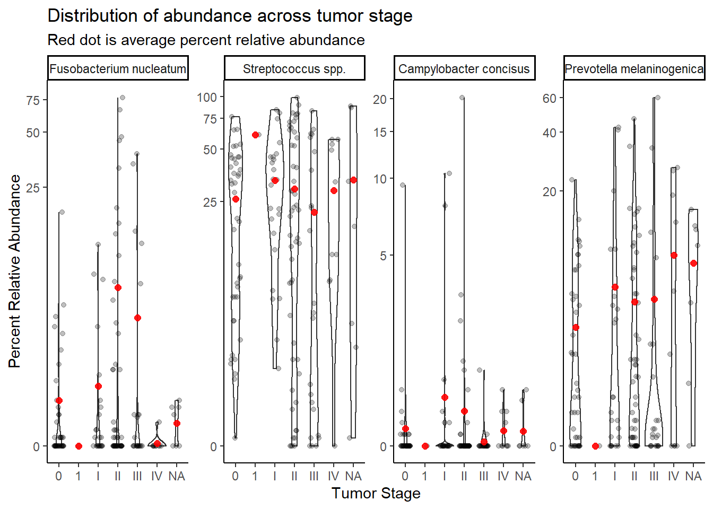
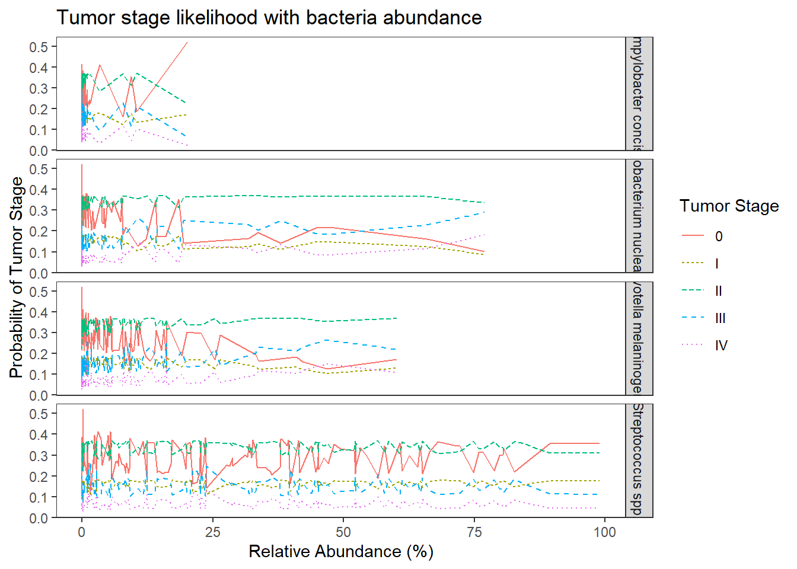
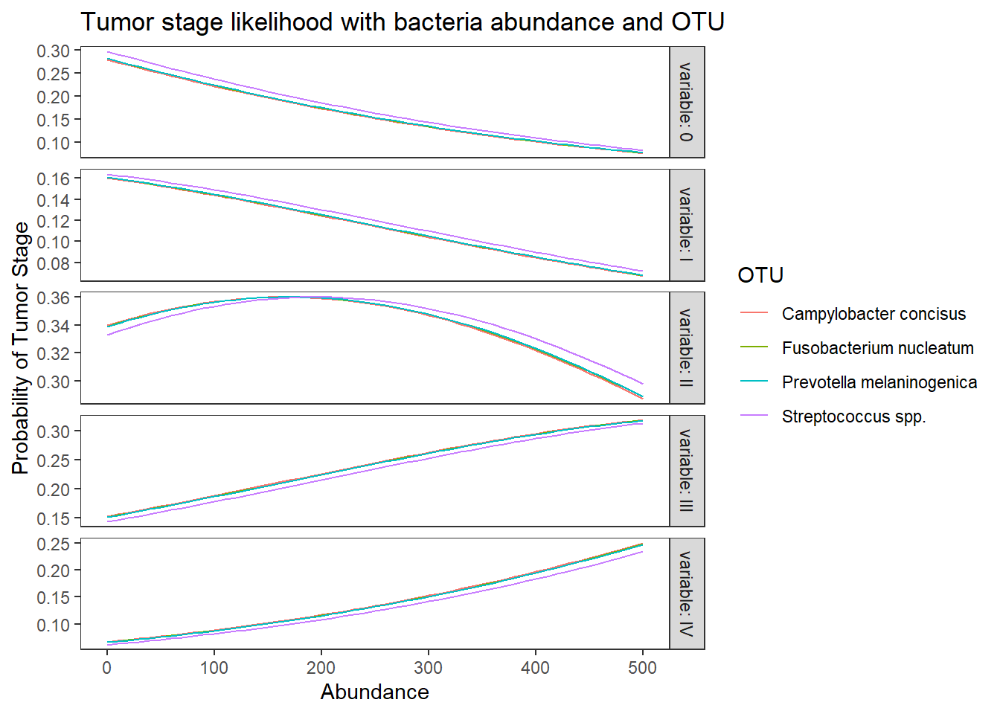
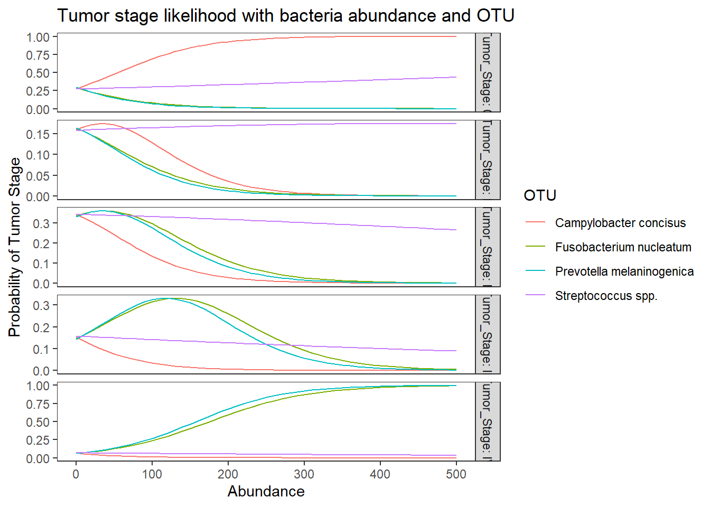

Last updated: 2021-02-11
Checks: 6 1
Knit directory: esoph-micro-cancer-workflow/
This reproducible R Markdown analysis was created with workflowr (version 1.6.2). The Checks tab describes the reproducibility checks that were applied when the results were created. The Past versions tab lists the development history.
The R Markdown is untracked by Git. To know which version of the R Markdown file created these results, you’ll want to first commit it to the Git repo. If you’re still working on the analysis, you can ignore this warning. When you’re finished, you can run wflow_publish to commit the R Markdown file and build the HTML.
Great job! The global environment was empty. Objects defined in the global environment can affect the analysis in your R Markdown file in unknown ways. For reproduciblity it’s best to always run the code in an empty environment.
The command set.seed(20200916) was run prior to running the code in the R Markdown file. Setting a seed ensures that any results that rely on randomness, e.g. subsampling or permutations, are reproducible.
Great job! Recording the operating system, R version, and package versions is critical for reproducibility.
Nice! There were no cached chunks for this analysis, so you can be confident that you successfully produced the results during this run.
Great job! Using relative paths to the files within your workflowr project makes it easier to run your code on other machines.
Great! You are using Git for version control. Tracking code development and connecting the code version to the results is critical for reproducibility.
The results in this page were generated with repository version 285a2fb. See the Past versions tab to see a history of the changes made to the R Markdown and HTML files.
Note that you need to be careful to ensure that all relevant files for the analysis have been committed to Git prior to generating the results (you can use wflow_publish or wflow_git_commit). workflowr only checks the R Markdown file, but you know if there are other scripts or data files that it depends on. Below is the status of the Git repository when the results were generated:
Ignored files:
Ignored: .Rhistory
Ignored: .Rproj.user/
Ignored: data/
Untracked files:
Untracked: analysis/heatmaps-dendrograms-species-level.Rmd
Untracked: analysis/ordered-logit-model.Rmd
Untracked: output/nci-species-lvl-heatmap-01-2021-02-11.pdf
Untracked: output/nci-species-lvl-heatmap-01-2021-02-11.png
Untracked: output/nci-species-lvl-heatmap-05-2021-02-11.pdf
Untracked: output/nci-species-lvl-heatmap-05-2021-02-11.png
Untracked: output/nci-specific-otus-heatmap-2021-02-11.pdf
Untracked: output/nci-specific-otus-heatmap-2021-02-11.png
Untracked: output/tcga-rna-species-lvl-heatmap-001-2021-02-11.pdf
Untracked: output/tcga-rna-species-lvl-heatmap-001-2021-02-11.png
Untracked: output/tcga-rna-species-lvl-heatmap-01-2021-02-11.pdf
Untracked: output/tcga-rna-species-lvl-heatmap-01-2021-02-11.png
Untracked: output/tcga-rna-species-lvl-heatmap-05-2021-02-11.pdf
Untracked: output/tcga-rna-species-lvl-heatmap-05-2021-02-11.png
Untracked: output/tcga-rna-specific-otus-heatmap-2021-02-11.pdf
Untracked: output/tcga-rna-specific-otus-heatmap-2021-02-11.png
Untracked: output/tcga-wgs-species-lvl-heatmap-001-2021-02-11.pdf
Untracked: output/tcga-wgs-species-lvl-heatmap-001-2021-02-11.png
Untracked: output/tcga-wgs-species-lvl-heatmap-01-2021-02-11.pdf
Untracked: output/tcga-wgs-species-lvl-heatmap-01-2021-02-11.png
Untracked: output/tcga-wgs-species-lvl-heatmap-05-2021-02-11.pdf
Untracked: output/tcga-wgs-species-lvl-heatmap-05-2021-02-11.png
Untracked: output/tcga-wgs-specific-otus-heatmap-2021-02-11.pdf
Untracked: output/tcga-wgs-specific-otus-heatmap-2021-02-11.png
Unstaged changes:
Modified: analysis/index.Rmd
Modified: code/load_packages.R
Note that any generated files, e.g. HTML, png, CSS, etc., are not included in this status report because it is ok for generated content to have uncommitted changes.
There are no past versions. Publish this analysis with wflow_publish() to start tracking its development.
Q3: Is fuso associated with tumor stage (pTNM) in either data set? Does X bacteria predict stage? Multivariable w/ age, sex, BMI, history of Barrett'sAdd to this analysis:
TCGA drop “not reported” from tumor stage.
# in long format
table(dat.16s$tumor.stage)
0 1 I II III IV
11088 264 6336 13464 6072 2640 # by subject
dat <- dat.16s %>% filter(OTU == "Fusobacterium_nucleatum")
table(dat$tumor.stage)
0 1 I II III IV
42 1 24 51 23 10 sum(table(dat$tumor.stage)) # sample size met[1] 151mean.dat <- dat.16s.s %>%
group_by(tumor.stage, OTU) %>%
summarize(M = mean(Abundance))`summarise()` has grouped output by 'tumor.stage'. You can override using the `.groups` argument.ggplot(dat.16s.s, aes(x=tumor.stage, y=Abundance))+
geom_violin()+
geom_jitter(alpha=0.25,width = 0.25)+
geom_point(data=mean.dat, aes(x=tumor.stage, y = M), size=2, alpha =0.9, color="red")+
labs(x="Tumor Stage",
title="Distribution of abundance across tumor stage",
subtitle="Red dot is average abundnace")+
scale_y_continuous(trans="pseudo_log")+
# breaks=c(0, 10, 100, 200, 300, 400, 500),
# limits = c(0,500),
#
facet_wrap(.~OTU, nrow=1, scales="free")+
theme_classic()
Stage “1” has only 1 unique sample and will be dropped from subsequent analyses. And remove NA values.
dat.16s.s <- dat.16s.s %>%
filter(tumor.stage != "1")%>%
mutate(tumor.stage = droplevels(tumor.stage, exclude=c("1",NA)))## fit ordered logit model and store results 'm'
fit <- MASS::polr(tumor.stage ~ OTU, data = dat.16s.s, Hess=TRUE)
## view a summary of the model
summary(fit)Call:
MASS::polr(formula = tumor.stage ~ OTU, data = dat.16s.s, Hess = TRUE)
Coefficients:
Value Std. Error t value
OTUStreptococcus spp. -6.29e-05 0.207 -0.000303
OTUCampylobacter concisus -6.28e-05 0.207 -0.000303
OTUPrevotella melaninogenica -6.32e-05 0.207 -0.000305
Intercepts:
Value Std. Error t value
0|I -0.944 0.156 -6.049
I|II -0.241 0.151 -1.595
II|III 1.266 0.161 7.875
III|IV 2.639 0.207 12.741
Residual Deviance: 1781.40
AIC: 1795.40 # obtain approximate p-values
ctable <- coef(summary(fit))
p <- pnorm(abs(ctable[, "t value"]), lower.tail = FALSE) * 2
(ctable <- cbind(ctable, "p value" = p)) Value Std. Error t value p value
OTUStreptococcus spp. -6.291e-05 0.2073 -0.0003035 9.998e-01
OTUCampylobacter concisus -6.281e-05 0.2073 -0.0003030 9.998e-01
OTUPrevotella melaninogenica -6.318e-05 0.2073 -0.0003048 9.998e-01
0|I -9.445e-01 0.1562 -6.0485909 1.461e-09
I|II -2.412e-01 0.1513 -1.5947287 1.108e-01
II|III 1.266e+00 0.1607 7.8750312 3.407e-15
III|IV 2.639e+00 0.2071 12.7409977 3.499e-37# obtain CIs
(ci <- confint(fit)) # CIs assuming normalityWaiting for profiling to be done... 2.5 % 97.5 %
OTUStreptococcus spp. -0.4065 0.4065
OTUCampylobacter concisus -0.4065 0.4065
OTUPrevotella melaninogenica -0.4065 0.4065## OR and CI
exp(cbind(OR = coef(fit), ci)) OR 2.5 % 97.5 %
OTUStreptococcus spp. 0.9999 0.6659 1.502
OTUCampylobacter concisus 0.9999 0.6659 1.502
OTUPrevotella melaninogenica 0.9999 0.6659 1.502# save fitted logits
pp <- fitted(fit)
# preditive data
dotu <- data.frame(OTU = c("Fusobacterium nucleatum", "Streptococcus spp.", "Campylobacter concisus", "Prevotella melaninogenica"))
predict(fit, newdata = dotu, "probs") # only TINY differences 0 I II III IV
1 0.28 0.16 0.34 0.1533 0.06667
2 0.28 0.16 0.34 0.1533 0.06667
3 0.28 0.16 0.34 0.1533 0.06667
4 0.28 0.16 0.34 0.1533 0.06667## store the predicted probabilities for each value of ses
pp.otu <-cbind(dotu, predict(fit, newdata = dotu, "probs", se = TRUE))
## calculate the mean probabilities within each level of OTU
by(pp.otu[, 2:6], pp.otu$OTU, colMeans)pp.otu$OTU: Campylobacter concisus
0 I II III IV
0.28001 0.16000 0.34000 0.15333 0.06667
------------------------------------------------------------
pp.otu$OTU: Fusobacterium nucleatum
0 I II III IV
0.27999 0.15999 0.34001 0.15334 0.06667
------------------------------------------------------------
pp.otu$OTU: Prevotella melaninogenica
0 I II III IV
0.28001 0.16000 0.34000 0.15333 0.06667
------------------------------------------------------------
pp.otu$OTU: Streptococcus spp.
0 I II III IV
0.28001 0.16000 0.34000 0.15333 0.06667 ## fit ordered logit model and store results
fit <- MASS::polr(tumor.stage ~ Abundance, data = dat.16s.s, Hess=TRUE)
## view a summary of the model
summary(fit)Call:
MASS::polr(formula = tumor.stage ~ Abundance, data = dat.16s.s,
Hess = TRUE)
Coefficients:
Value Std. Error t value
Abundance 0.00203 0.00384 0.529
Intercepts:
Value Std. Error t value
0|I -0.925 0.098 -9.432
I|II -0.221 0.091 -2.442
II|III 1.286 0.106 12.159
III|IV 2.659 0.168 15.829
Residual Deviance: 1781.12
AIC: 1791.12 # obtain approximate p-values
ctable <- coef(summary(fit))
p <- pnorm(abs(ctable[, "t value"]), lower.tail = FALSE) * 2
(ctable <- cbind(ctable, "p value" = p)) Value Std. Error t value p value
Abundance 0.002029 0.003837 0.5286 5.971e-01
0|I -0.924970 0.098068 -9.4319 4.027e-21
I|II -0.221123 0.090546 -2.4421 1.460e-02
II|III 1.285730 0.105746 12.1587 5.160e-34
III|IV 2.658753 0.167964 15.8293 1.953e-56# obtain CIs
(ci <- confint(fit)) # CIs assuming normalityWaiting for profiling to be done... 2.5 % 97.5 %
-0.005522 0.009549 ## OR and CI
exp(cbind(OR = coef(fit), ci)) OR ci
2.5 % 1.002 0.9945
97.5 % 1.002 1.0096# save fitted logits
pp <- fitted(fit)
dotu <- data.frame(OTU = c("Fusobacterium nucleatum", "Streptococcus spp.", "Campylobacter concisus", "Prevotella melaninogenica"), Abundance = mean(dat.16s.s$Abundance))
predict(fit, newdata = dotu, "probs") # bigger differences 0 I II III IV
1 0.2801 0.1602 0.3399 0.1532 0.06662
2 0.2801 0.1602 0.3399 0.1532 0.06662
3 0.2801 0.1602 0.3399 0.1532 0.06662
4 0.2801 0.1602 0.3399 0.1532 0.06662## look at the averaged predicted probabilities for different values of the continuous predictor variable Abundnace within each level of OTU
dabund <- data.frame(
OTU = rep(c("Fusobacterium nucleatum", "Streptococcus spp.", "Campylobacter concisus", "Prevotella melaninogenica"), each = 51),
Abundance = rep(seq(0, 500,10), 4)
)
pp.abund <-cbind(dabund, predict(fit, newdata = dabund, "probs", se = TRUE))
## calculate the mean probabilities within each level of OTU
by(pp.abund[, 3:7], pp.abund$OTU, colMeans)pp.abund$OTU: Campylobacter concisus
0 I II III IV
0.1970 0.1319 0.3530 0.2106 0.1075
------------------------------------------------------------
pp.abund$OTU: Fusobacterium nucleatum
0 I II III IV
0.1970 0.1319 0.3530 0.2106 0.1075
------------------------------------------------------------
pp.abund$OTU: Prevotella melaninogenica
0 I II III IV
0.1970 0.1319 0.3530 0.2106 0.1075
------------------------------------------------------------
pp.abund$OTU: Streptococcus spp.
0 I II III IV
0.1970 0.1319 0.3530 0.2106 0.1075 ## melt data set to long for ggplot2
lpp <- melt(pp.abund, id.vars = c("OTU", "Abundance"), value.name = "probability")
## plot predicted probabilities across Abundance values for each level of OTU
## facetted by tumor.stage
ggplot(lpp, aes(x = Abundance, y = probability)) +
geom_line() +
facet_grid(variable ~., scales="free")+
labs(y="Probability of Tumor Stage",
title="Tumor stage likelihood with bacteria abundance")+
theme(
panel.grid = element_blank()
)
## fit ordered logit model and store results
fit <- MASS::polr(tumor.stage ~ OTU + Abundance, data = dat.16s.s, Hess=TRUE)
## view a summary of the model
summary(fit)Call:
MASS::polr(formula = tumor.stage ~ OTU + Abundance, data = dat.16s.s,
Hess = TRUE)
Coefficients:
Value Std. Error t value
OTUStreptococcus spp. -0.07580 0.23782 -0.3187
OTUCampylobacter concisus 0.01201 0.20806 0.0577
OTUPrevotella melaninogenica -0.00282 0.20726 -0.0136
Abundance 0.00309 0.00474 0.6527
Intercepts:
Value Std. Error t value
0|I -0.931 0.157 -5.921
I|II -0.227 0.153 -1.489
II|III 1.280 0.162 7.895
III|IV 2.653 0.208 12.744
Residual Deviance: 1780.97
AIC: 1796.97 # obtain approximate p-values
ctable <- coef(summary(fit))
p <- pnorm(abs(ctable[, "t value"]), lower.tail = FALSE) * 2
(ctable <- cbind(ctable, "p value" = p)) Value Std. Error t value p value
OTUStreptococcus spp. -0.075802 0.237819 -0.31874 7.499e-01
OTUCampylobacter concisus 0.012013 0.208062 0.05774 9.540e-01
OTUPrevotella melaninogenica -0.002818 0.207263 -0.01360 9.892e-01
Abundance 0.003091 0.004736 0.65267 5.140e-01
0|I -0.931388 0.157314 -5.92055 3.209e-09
I|II -0.227249 0.152659 -1.48861 1.366e-01
II|III 1.279684 0.162094 7.89470 2.910e-15
III|IV 2.652544 0.208139 12.74410 3.363e-37# obtain CIs
(ci <- confint(fit)) # CIs assuming normalityWaiting for profiling to be done... 2.5 % 97.5 %
OTUStreptococcus spp. -0.542806 0.39021
OTUCampylobacter concisus -0.396086 0.41996
OTUPrevotella melaninogenica -0.409287 0.40363
Abundance -0.006224 0.01237## OR and CI
exp(cbind(OR = coef(fit), ci)) OR 2.5 % 97.5 %
OTUStreptococcus spp. 0.9270 0.5811 1.477
OTUCampylobacter concisus 1.0121 0.6729 1.522
OTUPrevotella melaninogenica 0.9972 0.6641 1.497
Abundance 1.0031 0.9938 1.012# save fitted logits
pp <- fitted(fit)
# predit data
dotu <- data.frame(OTU = c("Fusobacterium nucleatum", "Streptococcus spp.", "Campylobacter concisus", "Prevotella melaninogenica"), Abundance = mean(dat.16s.s$Abundance))
predict(fit, newdata = dotu, "probs") # bigger differences 0 I II III IV
1 0.2768 0.1595 0.3411 0.1549 0.06763
2 0.2922 0.1628 0.3352 0.1467 0.06301
3 0.2744 0.1589 0.3420 0.1563 0.06840
4 0.2774 0.1596 0.3409 0.1546 0.06746## look at the averaged predicted probabilities for different values of the continuous predictor variable Abundnace within each level of OTU
dabund <- data.frame(
OTU = rep(c("Fusobacterium nucleatum", "Streptococcus spp.", "Campylobacter concisus", "Prevotella melaninogenica"), each = 51),
Abundance = rep(seq(0, 500,10), 4)
)
pp.abund <-cbind(dabund, predict(fit, newdata = dabund, "probs", se = TRUE))
## calculate the mean probabilities within each level of OTU
by(pp.abund[, 3:7], pp.abund$OTU, colMeans)pp.abund$OTU: Campylobacter concisus
0 I II III IV
0.1615 0.1142 0.3400 0.2418 0.1425
------------------------------------------------------------
pp.abund$OTU: Fusobacterium nucleatum
0 I II III IV
0.1631 0.1149 0.3404 0.2406 0.1410
------------------------------------------------------------
pp.abund$OTU: Prevotella melaninogenica
0 I II III IV
0.1635 0.1150 0.3405 0.2403 0.1407
------------------------------------------------------------
pp.abund$OTU: Streptococcus spp.
0 I II III IV
0.1734 0.1194 0.3425 0.2324 0.1323 ## melt data set to long for ggplot2
lpp <- melt(pp.abund, id.vars = c("OTU", "Abundance"), value.name = "probability")
## plot predicted probabilities across Abundance values for each level of OTU
## facetted by tumor.stage
ggplot(lpp, aes(x = Abundance, y = probability, colour = OTU)) +
geom_line() +
facet_grid(variable ~., scales="free", labeller="label_both")+
labs(y="Probability of Tumor Stage",
title="Tumor stage likelihood with bacteria abundance and OTU")+
theme(
panel.grid = element_blank()
)
## fit ordered logit model and store results
fit <- MASS::polr(tumor.stage ~ OTU + Abundance+ OTU:Abundance, data = dat.16s.s, Hess=TRUE)
## view a summary of the model
summary(fit)Call:
MASS::polr(formula = tumor.stage ~ OTU + Abundance + OTU:Abundance,
data = dat.16s.s, Hess = TRUE)
Coefficients:
Value Std. Error t value
OTUStreptococcus spp. 0.11164 0.2670 0.418
OTUCampylobacter concisus 0.07891 0.2167 0.364
OTUPrevotella melaninogenica -0.02403 0.2284 -0.105
Abundance 0.01545 0.0118 1.306
OTUStreptococcus spp.:Abundance -0.01691 0.0131 -1.294
OTUCampylobacter concisus:Abundance -0.03294 0.0639 -0.516
OTUPrevotella melaninogenica:Abundance 0.00191 0.0188 0.102
Intercepts:
Value Std. Error t value
0|I -0.880 0.164 -5.363
I|II -0.173 0.160 -1.080
II|III 1.340 0.170 7.863
III|IV 2.715 0.215 12.642
Residual Deviance: 1778.15
AIC: 1800.15 # obtain approximate p-values
ctable <- coef(summary(fit))
p <- pnorm(abs(ctable[, "t value"]), lower.tail = FALSE) * 2
(ctable <- cbind(ctable, "p value" = p)) Value Std. Error t value p value
OTUStreptococcus spp. 0.111638 0.26698 0.4181 6.758e-01
OTUCampylobacter concisus 0.078914 0.21672 0.3641 7.158e-01
OTUPrevotella melaninogenica -0.024033 0.22839 -0.1052 9.162e-01
Abundance 0.015445 0.01183 1.3061 1.915e-01
OTUStreptococcus spp.:Abundance -0.016909 0.01306 -1.2943 1.956e-01
OTUCampylobacter concisus:Abundance -0.032940 0.06388 -0.5156 6.061e-01
OTUPrevotella melaninogenica:Abundance 0.001913 0.01884 0.1016 9.191e-01
0|I -0.879584 0.16400 -5.3633 8.174e-08
I|II -0.172875 0.16011 -1.0797 2.803e-01
II|III 1.340472 0.17047 7.8633 3.740e-15
III|IV 2.715144 0.21478 12.6417 1.244e-36# obtain CIs
(ci <- confint(fit)) # CIs assuming normalityWaiting for profiling to be done... 2.5 % 97.5 %
OTUStreptococcus spp. -0.412893 0.634477
OTUCampylobacter concisus -0.345946 0.504079
OTUPrevotella melaninogenica -0.472057 0.423783
Abundance -0.007727 0.039526
OTUStreptococcus spp.:Abundance -0.043247 0.008643
OTUCampylobacter concisus:Abundance -0.169623 0.092063
OTUPrevotella melaninogenica:Abundance -0.035537 0.038820## OR and CI
exp(cbind(OR = coef(fit), ci)) OR 2.5 % 97.5 %
OTUStreptococcus spp. 1.1181 0.6617 1.886
OTUCampylobacter concisus 1.0821 0.7076 1.655
OTUPrevotella melaninogenica 0.9763 0.6237 1.528
Abundance 1.0156 0.9923 1.040
OTUStreptococcus spp.:Abundance 0.9832 0.9577 1.009
OTUCampylobacter concisus:Abundance 0.9676 0.8440 1.096
OTUPrevotella melaninogenica:Abundance 1.0019 0.9651 1.040# save fitted logits
pp <- fitted(fit)
# predit data
gmeans <- dat.16s.s %>% group_by(OTU) %>% summarise(M = mean(Abundance))
dotu <- data.frame(OTU = c("Fusobacterium nucleatum", "Streptococcus spp.", "Campylobacter concisus", "Prevotella melaninogenica"), Abundance = gmeans$M)
predict(fit, newdata = dotu, "probs") # bigger differences 0 I II III IV
1 0.2815 0.1612 0.3403 0.1515 0.06552
2 0.2788 0.1606 0.3413 0.1530 0.06633
3 0.2788 0.1606 0.3413 0.1530 0.06635
4 0.2793 0.1607 0.3411 0.1527 0.06618## look at the averaged predicted probabilities for different values of the continuous predictor variable Abundnace within each level of OTU
dabund <- data.frame(
OTU = rep(c("Fusobacterium nucleatum", "Streptococcus spp.", "Campylobacter concisus", "Prevotella melaninogenica"), each = 51),
Abundance = rep(seq(0, 500,10), 4)
)
pp.abund <-cbind(dabund, predict(fit, newdata = dabund, "probs", se = TRUE))
## calculate the mean probabilities within each level of OTU
by(pp.abund[, 3:7], pp.abund$OTU, colMeans)pp.abund$OTU: Campylobacter concisus
0 I II III IV
0.849088 0.052662 0.068093 0.021732 0.008426
------------------------------------------------------------
pp.abund$OTU: Fusobacterium nucleatum
0 I II III IV
0.04697 0.03502 0.12530 0.15395 0.63875
------------------------------------------------------------
pp.abund$OTU: Prevotella melaninogenica
0 I II III IV
0.04299 0.03181 0.11282 0.13782 0.67457
------------------------------------------------------------
pp.abund$OTU: Streptococcus spp.
0 I II III IV
0.35013 0.16995 0.30904 0.12107 0.04981 ## melt data set to long for ggplot2
lpp <- melt(pp.abund, id.vars = c("OTU", "Abundance"), value.name = "probability") %>%
mutate(Tumor_Stage = variable)
## plot predicted probabilities across Abundance values for each level of OTU
## facetted by tumor.stage
ggplot(lpp, aes(x = Abundance, y = probability, colour = OTU)) +
geom_line() +
facet_grid(Tumor_Stage ~., scales="free", labeller="label_both")+
labs(y="Probability of Tumor Stage",
title="Tumor stage likelihood with bacteria abundance and OTU")+
theme(
panel.grid = element_blank()
)
# proportional odds assumption
glm(I(as.numeric(tumor.stage) >= 2) ~ OTU, family="binomial", data = dat.16s.s)
Call: glm(formula = I(as.numeric(tumor.stage) >= 2) ~ OTU, family = "binomial",
data = dat.16s.s)
Coefficients:
(Intercept) OTUStreptococcus spp.
9.44e-01 -1.38e-15
OTUCampylobacter concisus OTUPrevotella melaninogenica
-5.28e-16 -3.14e-16
Degrees of Freedom: 599 Total (i.e. Null); 596 Residual
Null Deviance: 712
Residual Deviance: 712 AIC: 720glm(I(as.numeric(tumor.stage) >= 3) ~ OTU, family="binomial", data = dat.16s.s)
Call: glm(formula = I(as.numeric(tumor.stage) >= 3) ~ OTU, family = "binomial",
data = dat.16s.s)
Coefficients:
(Intercept) OTUStreptococcus spp.
2.41e-01 -1.88e-15
OTUCampylobacter concisus OTUPrevotella melaninogenica
-2.70e-15 -1.73e-15
Degrees of Freedom: 599 Total (i.e. Null); 596 Residual
Null Deviance: 823
Residual Deviance: 823 AIC: 831glm(I(as.numeric(tumor.stage) >= 4) ~ OTU, family="binomial", data = dat.16s.s)
Call: glm(formula = I(as.numeric(tumor.stage) >= 4) ~ OTU, family = "binomial",
data = dat.16s.s)
Coefficients:
(Intercept) OTUStreptococcus spp.
-1.27e+00 -5.08e-15
OTUCampylobacter concisus OTUPrevotella melaninogenica
-7.88e-16 -3.16e-15
Degrees of Freedom: 599 Total (i.e. Null); 596 Residual
Null Deviance: 632
Residual Deviance: 632 AIC: 640glm(I(as.numeric(tumor.stage) >= 5) ~ OTU, family="binomial", data = dat.16s.s)
Call: glm(formula = I(as.numeric(tumor.stage) >= 5) ~ OTU, family = "binomial",
data = dat.16s.s)
Coefficients:
(Intercept) OTUStreptococcus spp.
-2.64e+00 8.92e-16
OTUCampylobacter concisus OTUPrevotella melaninogenica
2.04e-15 3.21e-16
Degrees of Freedom: 599 Total (i.e. Null); 596 Residual
Null Deviance: 294
Residual Deviance: 294 AIC: 302
sessionInfo()R version 4.0.3 (2020-10-10)
Platform: x86_64-w64-mingw32/x64 (64-bit)
Running under: Windows 10 x64 (build 19042)
Matrix products: default
locale:
[1] LC_COLLATE=English_United States.1252
[2] LC_CTYPE=English_United States.1252
[3] LC_MONETARY=English_United States.1252
[4] LC_NUMERIC=C
[5] LC_TIME=English_United States.1252
attached base packages:
[1] stats graphics grDevices utils datasets methods base
other attached packages:
[1] cowplot_1.1.1 dendextend_1.14.0 ggdendro_0.1.22 reshape2_1.4.4
[5] car_3.0-10 carData_3.0-4 gvlma_1.0.0.3 patchwork_1.1.1
[9] viridis_0.5.1 viridisLite_0.3.0 gridExtra_2.3 xtable_1.8-4
[13] kableExtra_1.3.1 MASS_7.3-53 data.table_1.13.6 readxl_1.3.1
[17] forcats_0.5.1 stringr_1.4.0 dplyr_1.0.3 purrr_0.3.4
[21] readr_1.4.0 tidyr_1.1.2 tibble_3.0.6 ggplot2_3.3.3
[25] tidyverse_1.3.0 lmerTest_3.1-3 lme4_1.1-26 Matrix_1.2-18
[29] vegan_2.5-7 lattice_0.20-41 permute_0.9-5 phyloseq_1.34.0
[33] workflowr_1.6.2
loaded via a namespace (and not attached):
[1] minqa_1.2.4 colorspace_2.0-0 rio_0.5.16
[4] ellipsis_0.3.1 rprojroot_2.0.2 XVector_0.30.0
[7] fs_1.5.0 rstudioapi_0.13 farver_2.0.3
[10] lubridate_1.7.9.2 xml2_1.3.2 codetools_0.2-16
[13] splines_4.0.3 knitr_1.31 ade4_1.7-16
[16] jsonlite_1.7.2 nloptr_1.2.2.2 broom_0.7.4
[19] cluster_2.1.0 dbplyr_2.1.0 BiocManager_1.30.10
[22] compiler_4.0.3 httr_1.4.2 backports_1.2.1
[25] assertthat_0.2.1 cli_2.3.0 later_1.1.0.1
[28] htmltools_0.5.1.1 prettyunits_1.1.1 tools_4.0.3
[31] igraph_1.2.6 gtable_0.3.0 glue_1.4.2
[34] Rcpp_1.0.6 Biobase_2.50.0 cellranger_1.1.0
[37] vctrs_0.3.6 Biostrings_2.58.0 rhdf5filters_1.2.0
[40] multtest_2.46.0 ape_5.4-1 nlme_3.1-149
[43] iterators_1.0.13 xfun_0.20 ps_1.5.0
[46] openxlsx_4.2.3 rvest_0.3.6 lifecycle_0.2.0
[49] statmod_1.4.35 zlibbioc_1.36.0 scales_1.1.1
[52] hms_1.0.0 promises_1.1.1 parallel_4.0.3
[55] biomformat_1.18.0 rhdf5_2.34.0 curl_4.3
[58] yaml_2.2.1 stringi_1.5.3 highr_0.8
[61] S4Vectors_0.28.1 foreach_1.5.1 BiocGenerics_0.36.0
[64] zip_2.1.1 boot_1.3-25 rlang_0.4.10
[67] pkgconfig_2.0.3 evaluate_0.14 Rhdf5lib_1.12.1
[70] labeling_0.4.2 tidyselect_1.1.0 plyr_1.8.6
[73] magrittr_2.0.1 R6_2.5.0 IRanges_2.24.1
[76] generics_0.1.0 DBI_1.1.1 foreign_0.8-80
[79] pillar_1.4.7 haven_2.3.1 withr_2.4.1
[82] mgcv_1.8-33 abind_1.4-5 survival_3.2-7
[85] modelr_0.1.8 crayon_1.4.1 rmarkdown_2.6
[88] progress_1.2.2 grid_4.0.3 git2r_0.28.0
[91] reprex_1.0.0 digest_0.6.27 webshot_0.5.2
[94] httpuv_1.5.5 numDeriv_2016.8-1.1 stats4_4.0.3
[97] munsell_0.5.0